ACTIONS
Objects
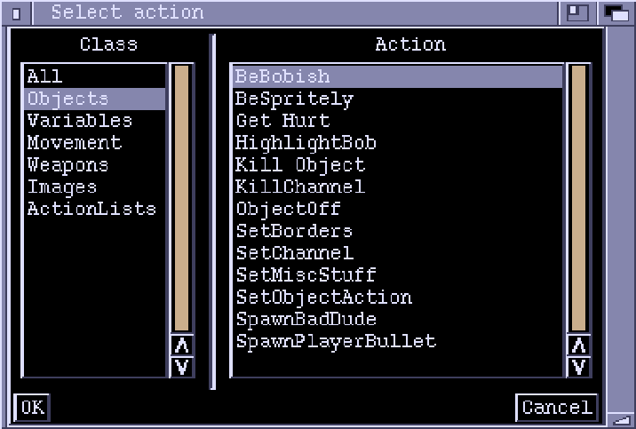
BeBobish
TBA
PARAMETERS- None
CONTEXT- Object
BeSpritely
TBA
PARAMETERS- None
CONTEXT- Object
GetHurt
Subtract the Damage value of the collision partner from the objects Shield value. If Shield goes below zero, then the objects Death ActionList is called.
PARAMETERS- None
CONTEXT- Collision
HighlightBob
Tell a bob object to appear 'Highlighted'. Any image displayed by a Highlighted bob is drawn using the last colour in the palette. 'Duration' specifies how long the bob is to stay in its highlighted state before returning to normal. Highlighting has no effect on sprites.
Highlighting is a common technique, often used to provide the player with visual feedback when collisions occur. for example, a player could flash white when hit by a bad dude.
PARAMETERS- Duration: How long to stay highlighted (Frames)
CONTEXT- Object
KillObject
Executes an Objects death ActionList, then removes in from the game. See also ObjectOff.
PARAMETERS- None
CONTEXT- Object
KillChannel
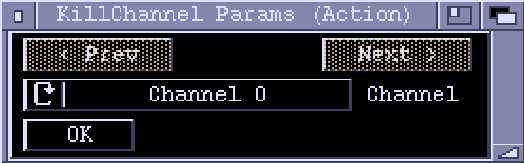
Remove the currently-installed ChannelRoutine from the specified channel. The Channel 'DoneActionList' is not executed. If the channel has no routine installed in it, this Action has no effect.
PARAMETERS- Channel: Channel number (0-4)
CONTEXT- Object
ObjectOff
Removes an Object from the game. The Objects death ActionList is not executed (as opposed to KillObject).
PARAMETERS- None
CONTEXT- Object
SetBorders
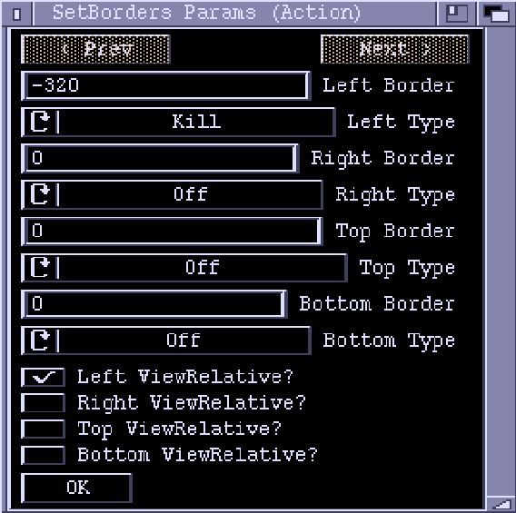
Define an objects borders. You can define what happens when the player
reaches each border using the Type fields:
- Off - the border is turned off, and has no effect on the object.
- Kill - an object is turned off when it hits this border. The objects DeathActionList is not executed - the object is simply removed.
- Stop - the object stops when it hits this border.
- Wrap - when the object moves past this border, it is repositioned at the opposite border.
- Bounce1 - when the object hits this border it bounces off, and the Direction variable is altered to point in the opposite direction.
- Bounce2 - same as 'Bounce1' only Direction is left unchanged.
Normally, the positions of borders are specified relative to the global
playing area, they can be given relative to the current position of
the display using the ViewRelative checkboxes.
PARAMETERS- Left Border: X position of left border
- Left Type: Off/Kill/Stop/Wrap/Bounce1/Bounce2
- Right Border: X position of right border
- Right Type: Off/Kill/Stop/Wrap/Bounce1/Bounce2
- Top Border: Y position of top border
- Top Type: Off/Kill/Stop/Wrap/Bounce1/Bounce2
- Bottom Border: Y position of bottom border
- Bottom Type: Off/Kill/Stop/Wrap/Bounce1/Bounce2
- Left ViewRelative?: Is left border position relative to current view?
- Right ViewRelative?: Is right border position relative to current : view?
- Top ViewRelative?: Is top border position relative to current view?
- Bottom ViewRelative?: Is bottom border position relative to current : view?
CONTEXT- Object
SetChannel
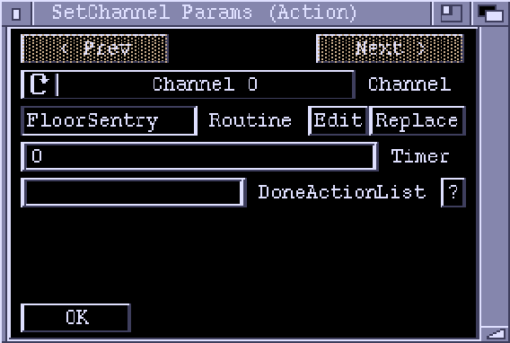
Installs a new update routine into the specified update Channel of an object. Each object has five Channels available. An installed Channel Routine will automatically execute every frame. The Channel will finish either when the timer runs out, or when the Channel Routine finishes (for example, an animation finishing). When the channel ends the 'DoneActionList' will be executed. If this field is left blank, no ActionList will be executed. A new Channel Routine can be selected with the 'Replace' button, while the 'Edit' button lets you alter the parameters of the current one.
PARAMETERS- Channel: The channel to set (0-4)
- Routine: Channel routine to install
- Timer: How many cycles the routine should be active for (0=forever)
- DoneActionList: ActionList to execute when channel finishes
CONTEXT- Object
SetMiscStuff
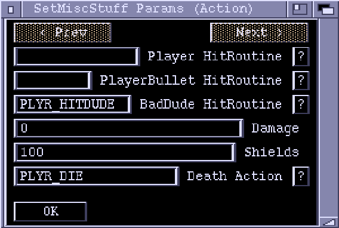
Sets up assorted parameters for an object.
PARAMETERS- Player HitRoutine: ActionList to execute when object hits a Player.
- PlayeBullet HitRoutine: ActionList to execute when object hits a
- PlayerBullet.
- BadDude HitRoutine: ActionList to execute when object hits a BadDude.
- Damage: The amount of damage object inflicts on other objects (via
- "GetHurt").
- Shields: Shield Value for the object
- Death Action: ActionList to execute when Shields fall below zero.
CONTEXT
Object
SetObjectAction
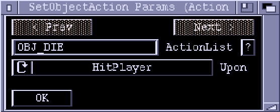
For changing the object Collision and Death ActionLists for an object. You can change the objects actions for: - HitPlayer - HitPlayerBullet - BitBadDude - Death
PARAMETERS- ActionList: An ActionList
- Upon: The event which will cause the ActionList to execute
CONTEXT- Object
SpawnBadDude
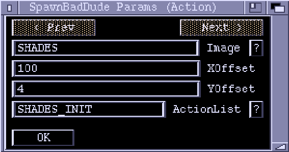
Creates and initializes a new BadDude object. If used in an object context, the new object will inherit position (altered by 'XOffset' and 'YOffset'), speed and direction from its parent. If called in a global context (ie with no parent object) 'XOffset' and 'YOffset' are used as absolute starting coordinates. If given, 'ActionList' is executed upon the newly created object.
PARAMETERS- Image: Image for new object to show
- XOffset: Offset from parent XPos
- YOffset: Offset from parent YPos
- ActionList: Actionlist used to initialize the new BadDude
CONTEXT- Object or Global
SpawnPlayerBullet
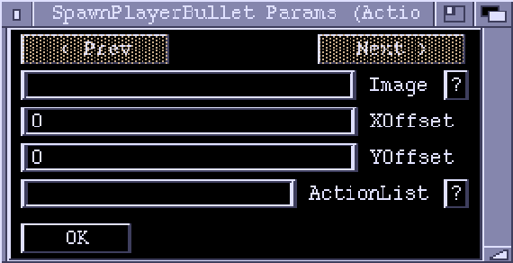
Creates and initializes a new PlayerBullet object. If used in an object context, the new object will inherit position (altered by 'XOffset' and 'YOffset'), speed and direction from its parent. If called in a global context (ie with no parent object) 'XOffset' and 'YOffset' are used as absolute starting coordinates. If given, 'ActionList' is executed upon the newly created object.
PARAMETERS- Image: Image for new object to show
- XOffset: Offset from parent XPos
- YOffset: Offset from parent YPos
- ActionList: Actionlist used to initialize the new PlayerBullet
CONTEXT- Object or Global
Variables
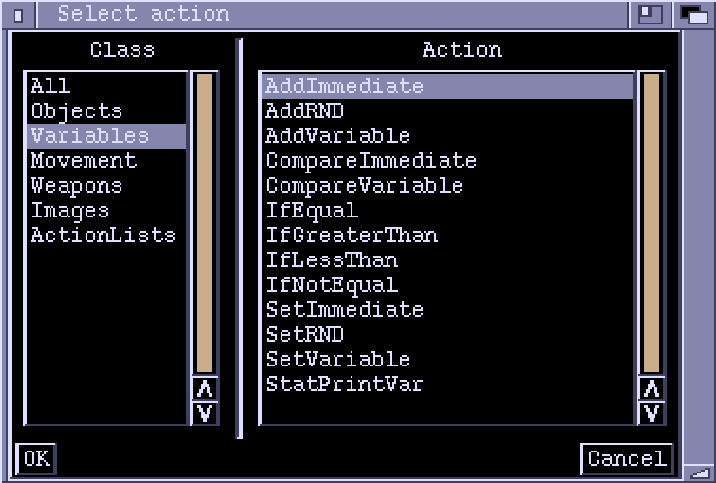
Variable List
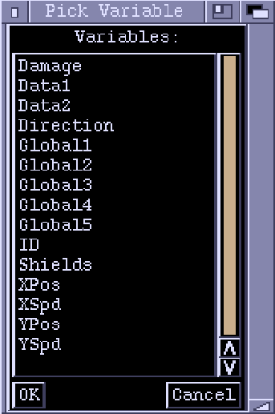
AddImmediate
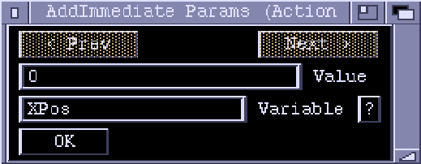
Adds 'Value' to the specifed variable. In certain contexts only some variables may be accessed. For example, the XPos variable of an object can only be set when the context has access to that object.
PARAMETERS- Value: Number to add to the variable
- Variable: The variable to add to
CONTEXT- Depends on variable
AddRND
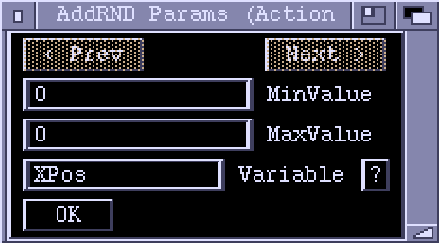
Adds a random number, between 'MinValue' and 'MaxValue' inclusive, to the specified variable.
PARAMETERS- MinValue: Lower limit of random value
- MaxValue: Upper limit of random value
- Variable: The variable to add to
CONTEXT- Depends on variable
AddVariable
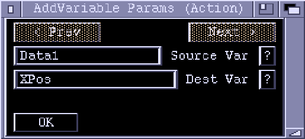
Adds source variable to the destination variable. The destination variable holds the result of the addition. Please note that some variables can only be accessed in certain contexts.
PARAMETERS- Source Var: The variable to add to 'Dest Var'
- Dest Var: The destination (result) variable
CONTEXT- Depends on the variables
CompareImmediate
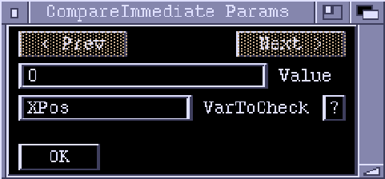
Compares 'VarToCheck' against 'Value'. The result of the comparision can be acted upon using the 'If...' Actions. In global context, you cannot access any variables which require object context.
PARAMETERS- Value: A value for comparison
- VarToCheck: The variable to compare against 'Value'
CONTEXT- Object or Global
CompareVariable
Compares 'VarToCheck' against the contents of 'ValueVar'. The result of the comparision can be acted upon using the 'If...' Actions. In global context, you cannot access any variables which require object context.
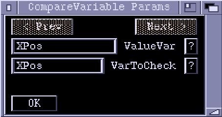
PARAMETERS- ValueVar: Variable containing value for comparison
- VarToCheck: The variable to compare against 'ValueVar'
CONTEXT- Object or Global
IfEqual
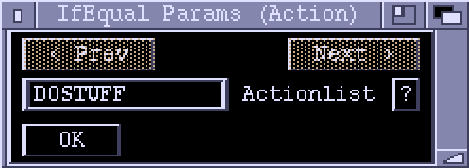
Conditional execution of an ActionList, depending on a previous comparison Action. The ActionList will be called if the parameters of a previous comparison were equal. A comparison may be followed by multiple 'If...' Actions.
PARAMETERS- ActionList: ActionList to execute if condition is true
CONTEXT- Global
IfGreaterThan
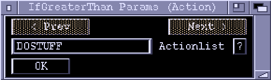
Conditional execution of an ActionList, depending on a previous comparison Action. For example, if a 'CompareVariable' was previously executed, then the ActionList would be called if the contents of 'VarToCheck' were greater than the contents of 'ValueVar'. A comparison may be followed by multiple 'If...' Actions.
PARAMETERS- ActionList: ActionList to execute if condition is true
CONTEXT- Global
IfLessThan
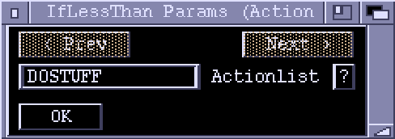
Conditional execution of an ActionList, depending on a previous comparison Action. For example, if a 'CompareImmediate' was previously executed, then the ActionList would be called if the contents of 'VarToCheck' were less than the contents of 'Value'. A comparison may be followed by multiple 'If...' Actions.
PARAMETERS- ActionList: ActionList to execute if condition is true
CONTEXT- Global
IfNotEqual
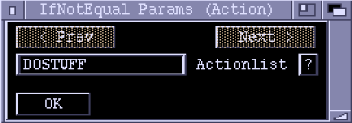
Conditional execution of an ActionList, depending on a previous comparison Action. The ActionList will be called if the parameters of a previous comparison were not equal. A comparison may be followed by multiple 'If...' Actions.
PARAMETERS- ActionList: ActionList to execute if condition is true
CONTEXT- Global
SetImmediate
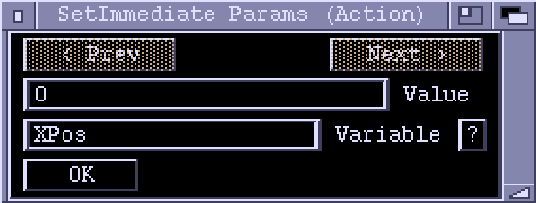
Stores 'Value' in the specifed variable. In certain contexts only some variables may be accessed. For example, the XPos variable of an object can only be set when the context has access to that object.
PARAMETERS- Value: Number to put into the variable
- Variable: The variable to set
CONTEXT- Depends on variable
SetRND
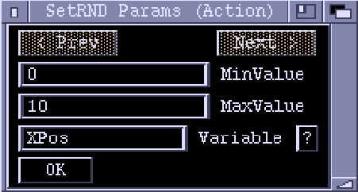
Puts a random number, between 'MinValue' and 'MaxValue' inclusive, into the specified variable.
PARAMETERS- MinValue: Lower limit of random value
- MaxValue: Upper limit of random value
- Variable: The variable to set
CONTEXT- Depends on variable
SetVariable
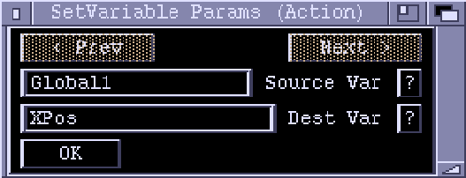
Copies the contents of the source variable into the destination variable. Please note that some variables can only be accessed in certain contexts.
PARAMETERS- Source Var: The variable to put in 'Dest Var'
- Dest Var: The destination (result) variable
CONTEXT- Depends on the variables
StatPrintVar
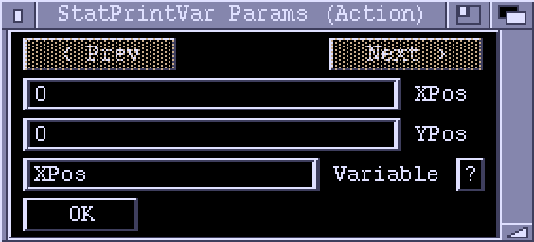
Prints the value of a variable in the stat bar. Of course, to print out an object variable this Action needs to be executed on an object (object context). Global variables can be printed out from any context. 'XPos' and 'YPos' are rounded to the nearest eight pixels.
PARAMETERS- XPos - X Position in the Stat Bar
- YPos - Y Position in the Stat Bar
- Variable - The variable to print
CONTEXT- Depends on variable.
Movement
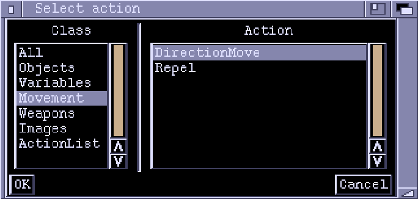
DirectionMove
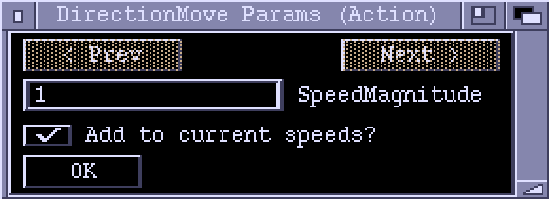
Sets an object moving at a speed of 'SpeedMagnitude' along the current direction (given in the objects Direction variable). It does this by calculating values for XSpeed and YSpeed. If 'Add to current speeds' is set, then the calculated values will be added to the current XSpeed and YSpeed, instead of replacing them.
PARAMETERS- SpeedMagnitude:
- Add to current speeds?:
CONTEXT- Object
Repel
TBA
PARAMETERS- X Shifts
- Y Shifts
CONTEXT- Object
Weapons
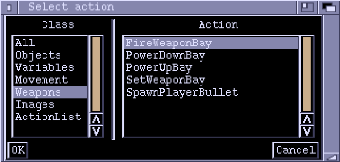
FireWeaponBay
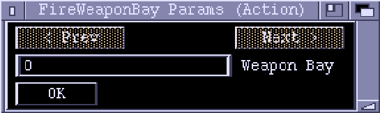
Fires the Weapon currently installed in the given weapon bay. If no weapon is installed, then this Action will have no effect.
PARAMETERS- Weapon Bay: The number of the weapon bay to fire.
CONTEXT- Player
PowerDownBay
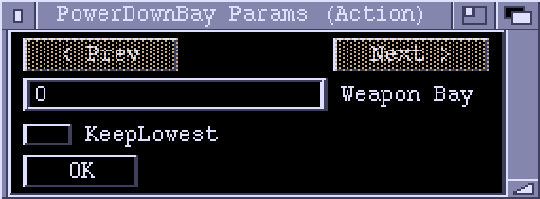
If the weapon bay has a weapon installed, this Action will install its PowerDown weapon. If the weapon has no PowerDown weapon defined (meaning that it is the least powerful weapon in the chain), either the current weapon will be retained (if 'KeepLowest' is ticked), or the weapon bay will be left empty ('KeepLowest' not ticked). If the weapon bay is already empty, this Action has no effect.
PARAMETERS- Weapon Bay: The weapon bay to power up.
- KeepLowest: Should the powering down stop at the lowest weapon?
CONTEXT- Player
PowerUpBay
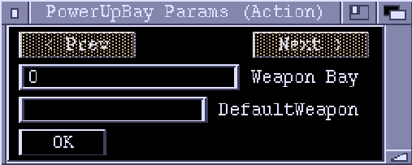
If the weapon bay has a weapon installed, this Action will install its PowerUp weapon, if it has one defined. If the bay is empty 'DefaultWeapon' is installed (if set).
PARAMETERS- Weapon Bay: The weapon bay to power up.
- DefaultWeapon: The weapon to install if the bay is empty
CONTEXT- Player
SetWeaponBay
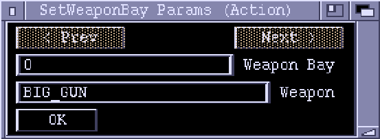
Installs 'Weapon' into 'Weapon Bay'. If 'Weapon' is left blank, the bay will be made empty - any weapon already installed will be removed.
PARAMETERS- Weapon Bay: The number of the weapon bay to set
- Weapon: The weapon to install
CONTEXT- Player
SpawnPlayerBullet
Images
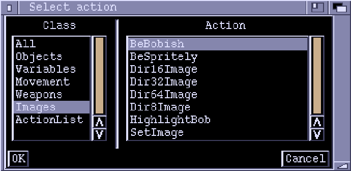
BeBobish
See BeBobish
BeSpritely
See BeSpritely
Dir16Image
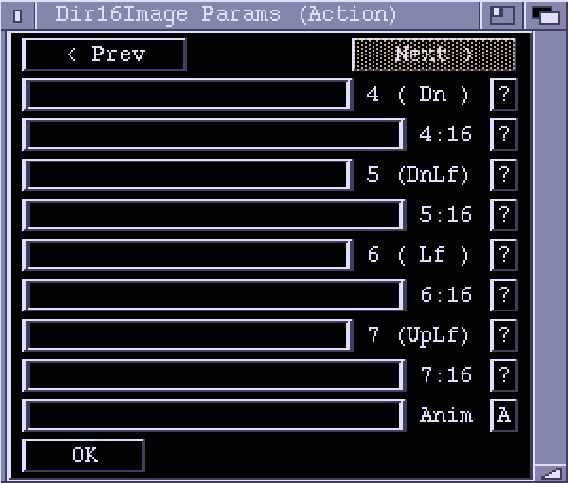
Sets an objects image to one of the 16 supplied, depending on its direction. The first image corresponds to direction 0 (up) and the other images follow clockwise, sweeping around a circle in 16 steps. If the 'Anim' field is used, images are instead picked from an animation. The 16 image fields will be ignored. The animation must contain at least 16 frames or weird things might happen when the non-existant frames are displayed. If an anim has a speed value other than one (from Gonk) it will, in effect, have extra frames. For example, an 8 frame anim at speed two will appear to be 16 frames long, and can be used the same as a 16 frame anim. An advantage of using the 'Anim' field is that the x & y offsets of each frame are respected.
PARAMETERS- 16 Images, corresponding to directions
- Anim: Optional anim containing 16 frames (at least)
Dir32Image
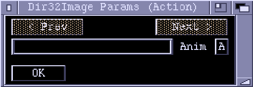
Same as Dir16Image, only with more images.
PARAMETERS- Anim: Optional anim containing 32 frames (at least)
Dir64Image
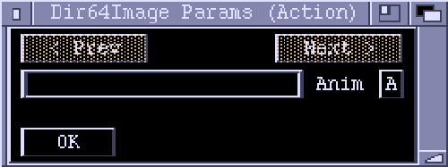
Same as Dir16Image, only with lots more images.
PARAMETERS- Anim: Optional anim containing 64 frames (at least)
Dir8Image
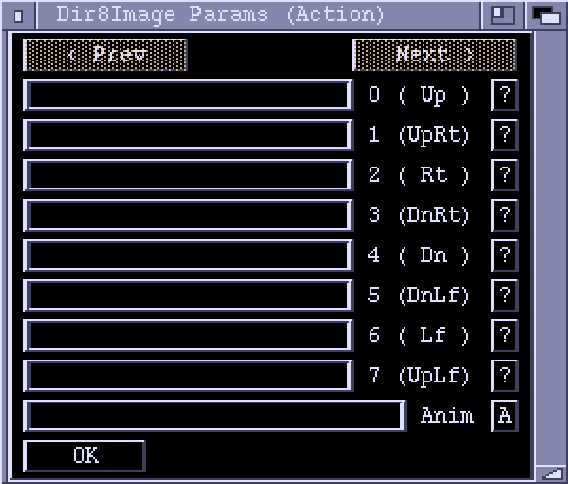
Same as Dir16Image, only with less images.
PARAMETERS- 8 Images, corresponding to directions
- Anim: Optional anim containing 8 frames (at least)
HighlightBob
See HighlightBob
SetImage
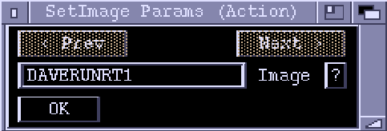
Tells a bob (or sprite) to display the specified image. If the 'Image' field is left blank, then the object will be invisible.
PARAMETERS- Image: The image to display
CONTEXT- Object
ActionLists
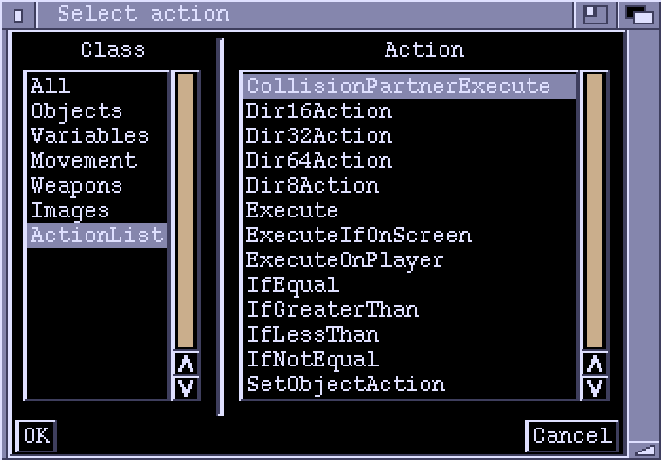
CollisionPartnerExecute
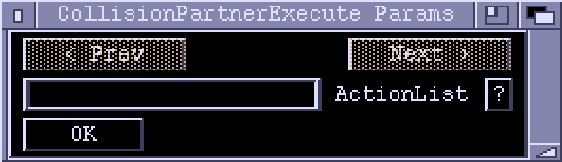
Executes the specified ActionList on the Collision Partner object.
PARAMETERS- ActionList: ActionList to execute
CONTEXT- Collision
Dir16Action
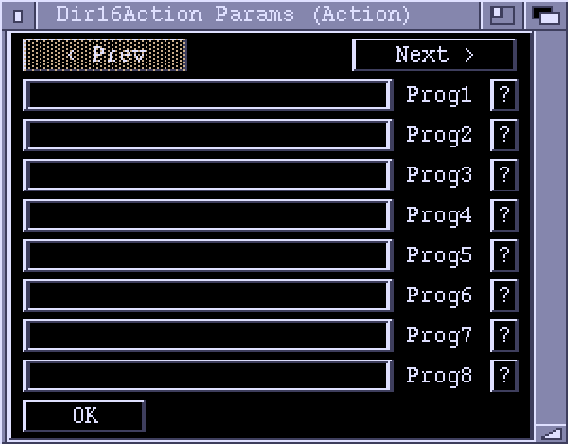
Executes an Actionlist depending on direction. The first ActionList corresponds to direction 0 (up), the other ActionLists sweeping out around the circle clockwise.
PARAMETERS- 16 Actionlists, corresponding to directions
Dir32Action
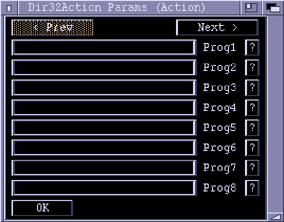
Executes an Actionlist depending on direction. The first ActionList corresponds to direction 0 (up), the other ActionLists sweeping out around the circle clockwise.
PARAMETERS- 32 Actionlists, corresponding to directions
Dir64Action
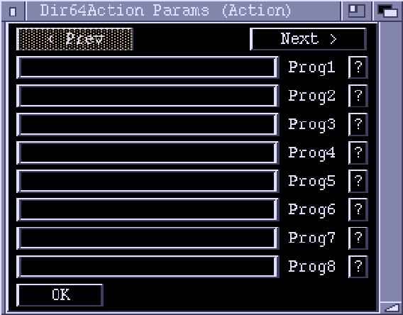
Executes an Actionlist depending on direction. The first ActionList corresponds to direction 0 (up), the other ActionLists sweeping out around the circle clockwise.
PARAMETERS- 64 Actionlists, corresponding to directions
Dir8Action
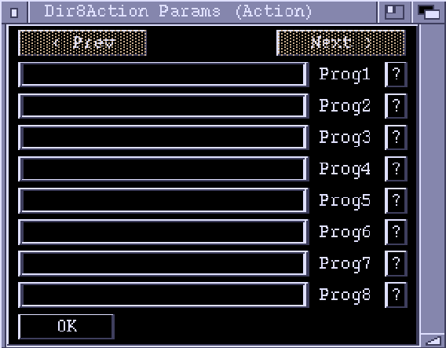
Executes an Actionlist depending on direction. The first ActionList corresponds to direction 0 (up), the other ActionLists sweeping out around the circle clockwise.
PARAMETERS- 8 Actionlists, corresponding to directions
Execute
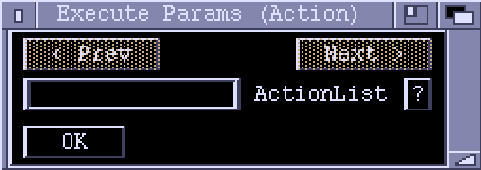
Executes the specified actionlist (similar to a GOSUB in BASIC). When the ActionList finishes, control will resume at the next Action after the Execute.
PARAMETERS- ActionList: The actionlist to execute.
CONTEXT- Global
ExecuteIfOnScreen
Executes 'ActionList' only if the object in context is currently within view.
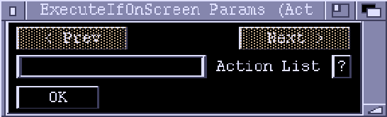
PARAMETERS- ActionList: The actionlist to execute.
CONTEXT- Object
ExecuteOnPlayer
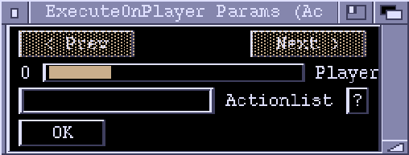
Executes 'ActionList' on the specified Player.
PARAMETERS- Player: The player to execute on
- ActionList: The actionlist to execute
CONTEXT- Global
IfEqual
See IfEqual
IfGreaterThan
See IfGreaterThan
IfLessThan
See IfLessThan
IfNotEqual
See IfNotEqual
SetObjectAction
See SetObjectAction
Other (All)
CollisionPartnerOff
Turns off the collision partner object. It's death ActionList is not called. See also KillCollisionPartner
PARAMETERS- None
CONTEXT- Collision
EndLevel
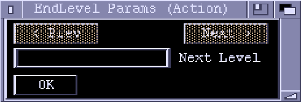
Stops the game, and jumps to the specified level. If 'Next Level' is left blank, then control will go to the first level.
PARAMETERS- Next Level: The level to go to
CONTEXT- Global
InitScroll
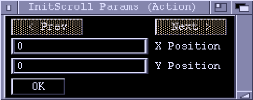
Sets the display window to a specific positon (in pixels) on the background map. This action must be called if you are using a backgound map, usually from the 'LevelInit' ActionList (set in the Display Chunk). Don't use this Action if you are using an IFF picture as a backdrop.
PARAMETERS- X Position: XPos of top left corner of display window
- Y Position: YPos of top left corder of display window
CONTEXT- Global
GiveScore
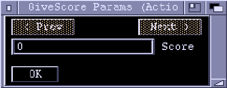
Adds 'Score' to a players score after a collision. If the collision partner is a player, then 'Score' is directly added onto the players score variable. If the object is a PlayerBullet, then 'Score' is added onto the score variable of the player that fired the bullet.
PARAMETERS- Score
CONTEXT- Collision
KillCollisionPartner
Turns off the collision partner object after executing its death ActionList (if set). See also CollisionPartnerOff
PARAMETERS- None
CONTEXT- Collision
PlayModule
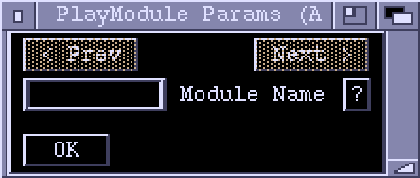
Starts playing the specified tracker music module. See also StopModule
PARAMETERS- Module Name: Filename of the module to play
CONTEXT- Global
PlaySFX
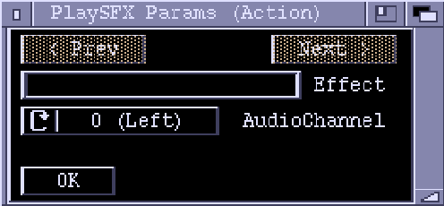
Plays the specified sound effect through an audio channel.
PARAMETERS- Effect: Sound effect to play
- AudioChannel: Hardware audio channel to use
CONTEXT- Global
PushScrollTrackX
Sets the horizontal scrolling to track the specified player. If the player moves right of 'Right Push Pos' then the view scrolls right. Going left of 'Left Push Pos' scrolls the view left. 'Max speed' limits the speed of the scrolling.
PARAMETERS- Player to track
- Left Push Pos
- Right Push Pos
- Max Speed
CONTEXT- Global
PushScrollTrackY
Sets the vertical scrolling to track the specified player. If the player moves above 'Top Push Pos' then the view scrolls up. Going below 'Bottom Push Pos' scrolls the view down. 'Max speed' limits the speed of the scrolling.
PARAMETERS- Player to track
- Top Push Pos
- Bottom Push Pos
- Max Speed
CONTEXT- Global
RandomEvent
A random number between 0 and 255 is picked. If it is less than "Probability" then the ActionList is executed. A probability of 0 means the event will never occur, while a probability of 255 is a certainty. The actionlist will be executed in the current context. That is, if the "RandomEvent" is being executed on an Object, for example, then the ActionList it executes will also execute on the Object. There is also a ChannelRoutine "RandomEvent".
PARAMETERS- Probability: The chances of the event happening (0=never, 255=always).
- ActionList: The ActionList to execute if the event occurs.
CONTEXT
`: Global
RestrictDirection
Restricts the Direction variable of an object to specified values, depending on the 'Restriction' field:
Min-Max- Direction is constrained to be betweenMinandMaxvalues.Left/Right- Direction is set to Left (6) or Right (2), whichever the the current direction is closest to.Up/Down- Direction is set to Up (0) or Down (4).4-Way- Direction is rounded to up, down, left or right.8-Way- Direction is rounded to the nearest 45 degrees.MinandMaxare ignored unless 'Restriction' is set toMin-Max.
PARAMETERS- Restriction: 'Min-Max'/'Left/Right'/'Up/Down'/'4-Way'/'8-Way'
- Min: Least clockwise direction allowed in 'Min-Max' mode
- Max: Most clockwise direction allowed in 'Min-Max' mode
CONTEXT- Object
ScrollConstantXSpeed
NOTE1: Only scrolling to the right is implemented as yet (ie Speed must be positive)... NOTE2: Only checks position of first player (TODO: fix this sometime).
Sets the background map scrolling horizontally at a constant speed, specified in the 'Speed' field. The player can force the scrolling to go in the opposite direction by moving within 'ScrollBackZoneWidth' pixels of the trailing edge of the view. 'ScrollBackDistance' specifies the distance, in pixels, the view can scroll back before it stops. Note that the scrolling in no way limits the movement of the player - if you want to keep the player within view you can use the 'SetBorders' action to set up view-relative borders. When the (forward) scrolling reaches the end of a map, the scrolling stops, scrollback is disabled and 'EndOfMapActionList' is executed (in a global context). Note: you can only scroll Map backgrounds, not IFF backdrops.
PARAMETERS- Speed: How fast to scroll (in pixels per frame)
- ScrollBackDistance: Distance the players are allowed to scroll backward
- ScrollBackSpeed: Speed of backward scrolling
- ScrollBackZoneWidth: Width of zone to trigger back scroll
- EndOfMapActionList: Executed when scrolling reaches end of map
CONTEXT- Global
ScrollXCenterPlayers
NOTE: Only 1,2 or 4 players are supported at the moment. Tries to keep all players within view. This is done by working out the average x position of all players and moving the view to center on that point. The tracking can be retarded using the 'MaxScrollSpeed' field. If the players get too far apart (further than the width of the view), the scrolling will display the empty space between them. This can be prevented using view-relative borders (use the SetBorders action). You have to be careful to 'balance' the borders - the center of the view (x = 160) must be exactly inbetween the left and right borders or else players may be able to 'drag' each other in certain directions. Note: you can only scroll Map backgrounds, not IFF backdrops.
PARAMETERS- MaxScrollSpeed: Maximum speed allowed, in pixels per frame
CONTEXT- Global
ScrollYCenterPlayers
NOTE: Only 1,2 or 4 players are supported at the moment. Tries to keep all players within view. This is done by working out the average x position of all players and moving the view to center on that point. The tracking can be retarded using the 'MaxScrollSpeed' field. If the players get too far apart (further than the width of the view), the scrolling will display the empty space between them. This can be prevented using view-relative borders (use the SetBorders action). You have to be careful to 'balance' the borders - the center of the view (x = 160) must be exactly inbetween the left and right borders or else players may be able to 'drag' each other in certain directions. Note: you can only scroll Map backgrounds, not IFF backdrops.
PARAMETERS- MaxScrollSpeed: Maximum speed allowed, in pixels per frame
CONTEXT- Global
SetCollisions
Turns object-to-object collision checking on or off for a particular object. With a bad dude for example, you may want to turn collsions off when it explodes so that the player can't shoot the explosion.
PARAMETERS- State: On or Off
CONTEXT- Object
StopModule
Stops a currently playing tracker music module. See also PlayModule.
PARAMETERS- None
CONTEXT- Global